Új: tíz mozdony az Excel-referenciák alapján
Második javítási kör
Rocket: 20%-kal kisebb kerékátmérő. General: sötétszürke kerékabroncsok. BM-50: új modell az Excel elülső és hátsó referenciaképe alapján. A színezés és az enyhe formaárnyalás az elfogadott ICE1 beállításait követi.
Az ICE 1 elfogadva, változatlan. Ez a kör három mozdony javítását tartalmazza; itt megálltam ellenőrzésre.
Előző kör teljes galériája · Jóváhagyott C-50
BM-50
Excel v8, Locomotives, 6. sor. Újraépített modell: magas piros oldallemez, alacsonyabb lekerekített burkolat, nyitott ülés, három részben takart kerék, sárga rácsok.
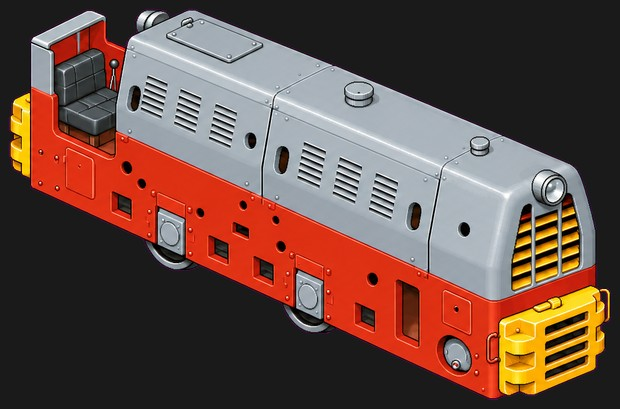
Referencia az Excelből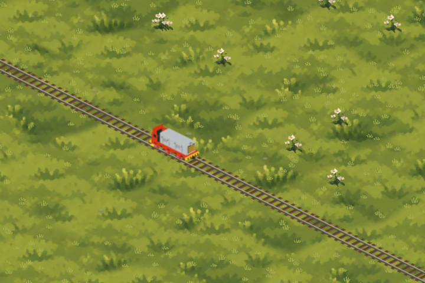
Előző kör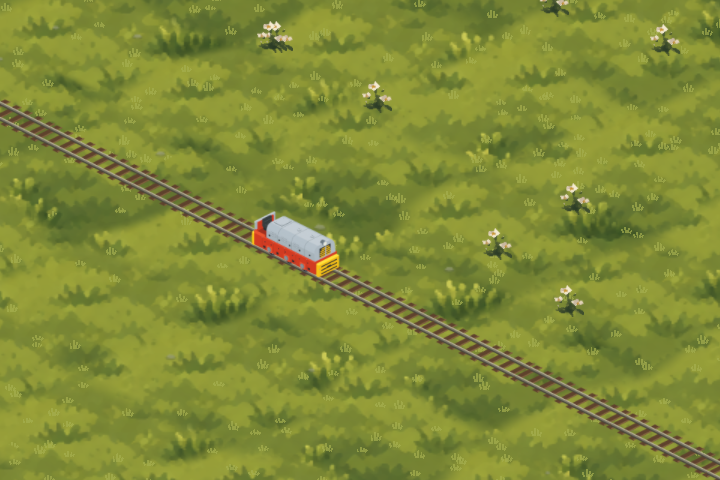
Javított modell a játékban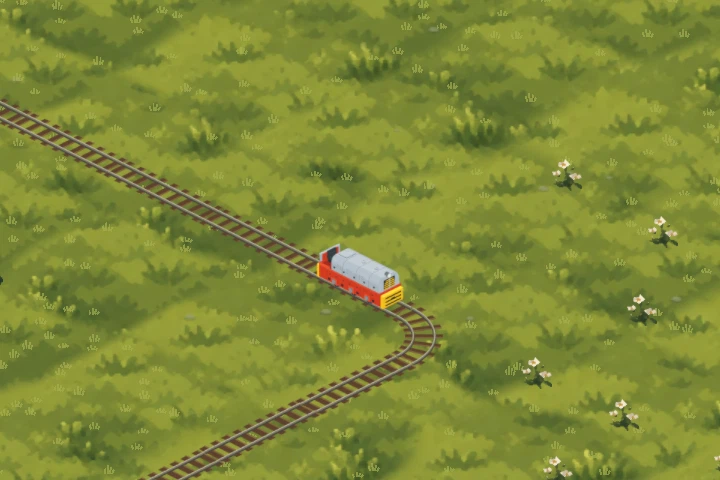
Kanyar és kerékforgás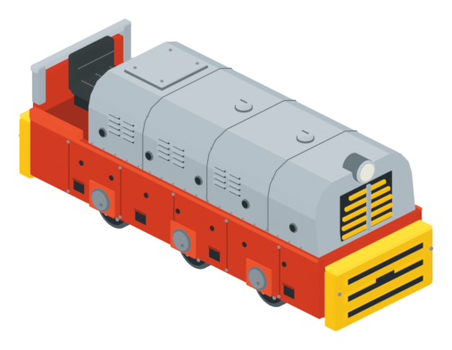
Új 3D modell, elölről — részletnézet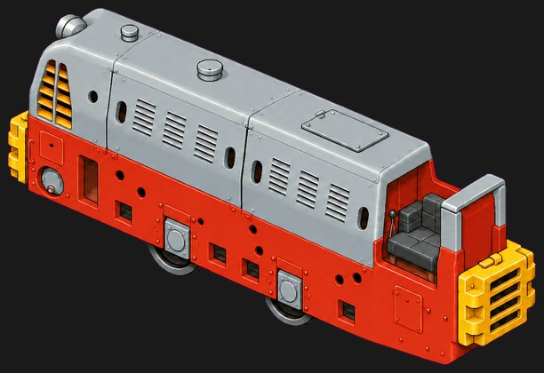
Hátsó referencia az Excelből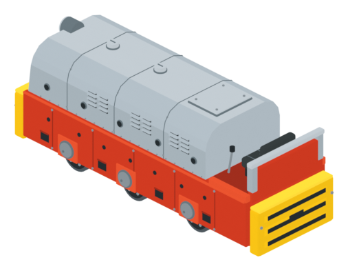
Új 3D modell, hátulról — részletnézet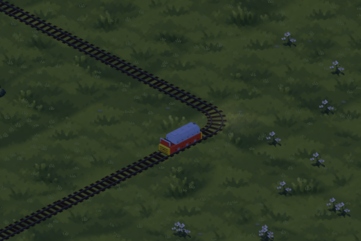
Éjszakai nézet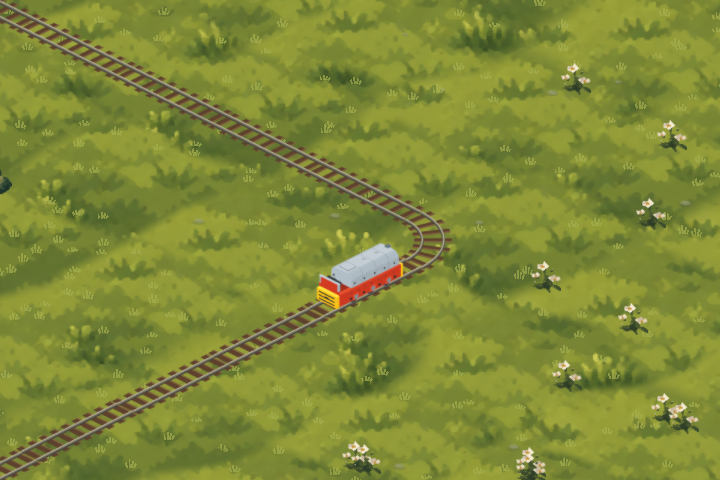
Megfordított mozdonyMegnyitás a tesztjátékban
The General
Excel v8, Locomotives, 18. sor. Az összes kerék futófelülete és abroncsa sötétszürke a 3D modellen.
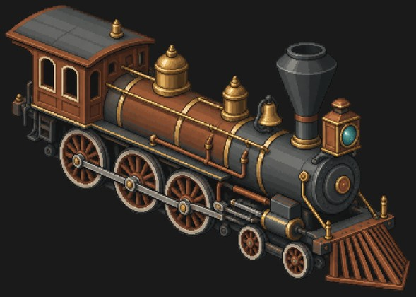
Referencia az Excelből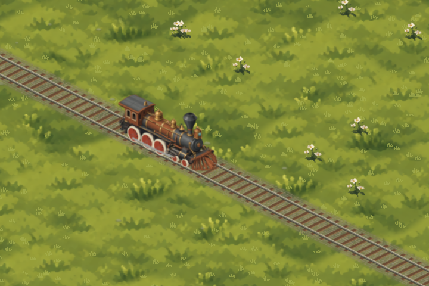
Előző kör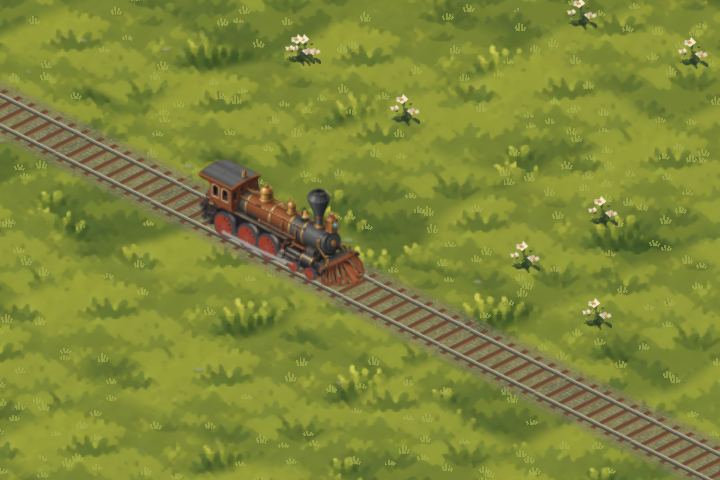
Javított modell a játékban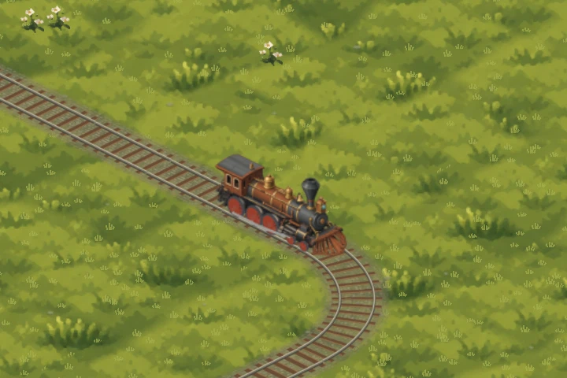
Kanyar és kerékforgás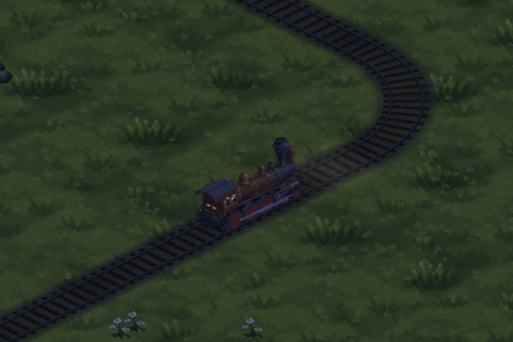
Éjszakai nézet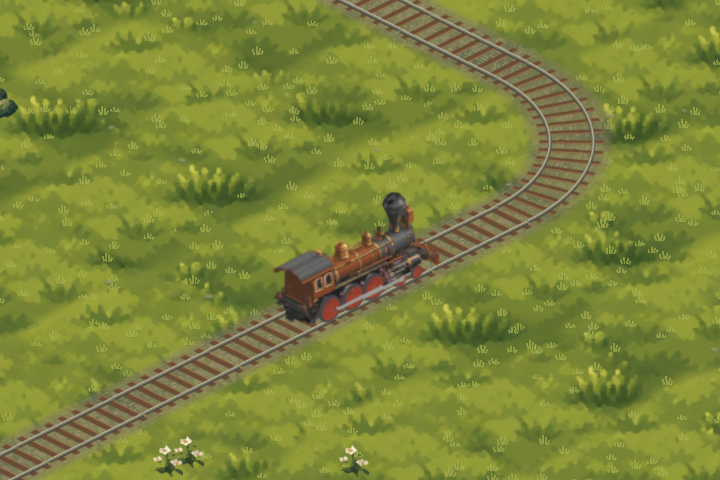
Megfordított mozdonyMegnyitás a tesztjátékban
Stephenson’s Rocket
Excel v8, Locomotives, 5. sor. A kerékátmérők 20%-kal kisebbek; a forgás üteme is az új átmérőt követi.
 Referencia az Excelből
Referencia az Excelből Előző kör
Előző kör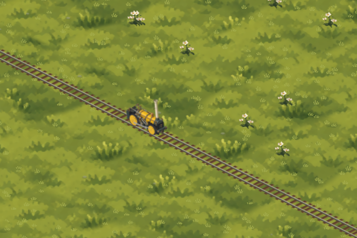
Javított modell a játékban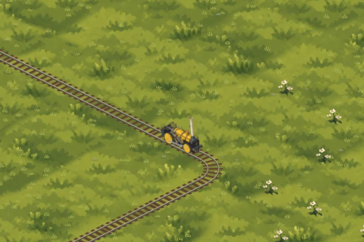
Kanyar és kerékforgás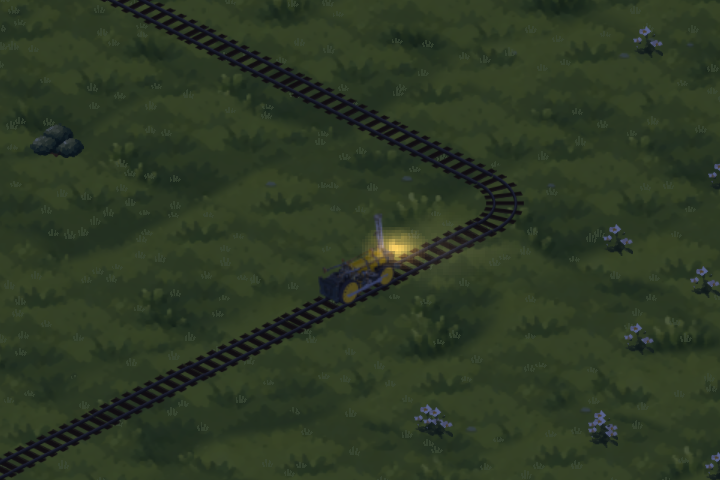
Éjszakai nézet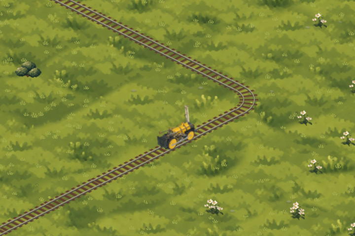
Megfordított mozdonyMegnyitás a tesztjátékban